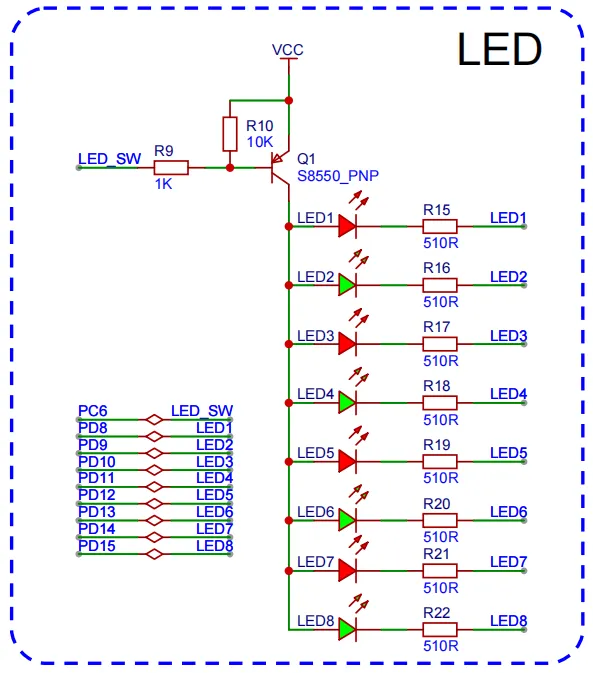

<!DOCTYPE lake>
<h2 data-lake-id="l8Xa3" id="l8Xa3"><span data-lake-id="u6bdfa6a6" id="u6bdfa6a6">学习目标</span></h2><ul list="u9fb6943f"><li data-lake-id="u23754454" fid="u2e759da7" id="u23754454"><span data-lake-id="u51166b2e" id="u51166b2e">掌握通过延时函数实现流水灯效果的基本方法。</span></li><li data-lake-id="u04a2c43e" fid="u2e759da7" id="u04a2c43e"><span data-lake-id="ucfe03d68" id="ucfe03d68">理解延时函数在嵌入式开发中的阻塞性问题。</span></li><li data-lake-id="uba9f8d02" fid="u2e759da7" id="uba9f8d02"><span data-lake-id="uc500f1fd" id="uc500f1fd">学习如何使用多任务机制（如非阻塞定时器）解决阻塞问题，同时实现流水灯和按键扫描功能。</span></li><li data-lake-id="uc58dd4de" fid="u2e759da7" id="uc58dd4de"><span data-lake-id="u956a33aa" id="u956a33aa">对比延时函数与多任务开发方式的差异，理解多任务的优势及其应用场景。</span></li></ul><h2 data-lake-id="XktL1" id="XktL1"><span data-lake-id="ue135c209" id="ue135c209">学习内容</span></h2><h3 data-lake-id="eJbfk" id="eJbfk"><span data-lake-id="u34639a4f" id="u34639a4f">需求1：流水灯效果</span></h3><p data-lake-id="uecd77adc" id="uecd77adc"></p><p data-lake-id="uc57ef835" id="uc57ef835"><span data-lake-id="u024c9042" id="u024c9042">实现8栈灯的依次流水</span></p><h4 data-lake-id="arBJT" id="arBJT"><span data-lake-id="u7448ec03" id="u7448ec03">思路说明</span></h4><p data-lake-id="uf9609b00" id="uf9609b00"><span data-lake-id="u6ed10b88" id="u6ed10b88">使用延时函数是最简单直接的方式，通过循环依次点亮每个 LED，并在每次状态切换后加入延时，形成流水灯效果。</span></p><h4 data-lake-id="mHahD" id="mHahD"><span data-lake-id="ua147fe37" id="ua147fe37">代码实现</span></h4><span class="yuque-card-unsupported">[codeblock]</span><span class="yuque-card-unsupported">[codeblock]</span><span class="yuque-card-unsupported">[codeblock]</span><span class="yuque-card-unsupported">[codeblock]</span><h3 data-lake-id="Yv307" id="Yv307"><span data-lake-id="uab6d20f8" id="uab6d20f8">需求2：按键事件</span></h3><p data-lake-id="udf891e1c" id="udf891e1c"></p><p data-lake-id="u2d63b2a0" id="u2d63b2a0"><span data-lake-id="ucdac5d4b" id="ucdac5d4b">实现不同按键按下后，打印抬起、按下状态。</span></p><h4 data-lake-id="amydW" id="amydW"><span data-lake-id="uf1fdc5b9" id="uf1fdc5b9">思路说明</span></h4><ol list="u7d70f885"><li data-lake-id="ud5419482" fid="u1527b570" id="ud5419482"><span data-lake-id="u4dbc7fac" id="u4dbc7fac">通过软件扫描方式，间隔进行状态读取</span></li><li data-lake-id="u93e1750c" fid="u1527b570" id="u93e1750c"><span data-lake-id="u241a2241" id="u241a2241">状态反转标记切换，状态改变才触发</span></li><li data-lake-id="ue6640026" fid="u1527b570" id="ue6640026"><span data-lake-id="u8b03662f" id="u8b03662f">通过回调暴露接口</span></li></ol><h4 data-lake-id="xoAyJ" id="xoAyJ"><span data-lake-id="u98519560" id="u98519560">代码实现</span></h4><span class="yuque-card-unsupported">[codeblock]</span><span class="yuque-card-unsupported">[codeblock]</span><span class="yuque-card-unsupported">[codeblock]</span><h3 data-lake-id="dNYWw" id="dNYWw"><span data-lake-id="udf1fbd8e" id="udf1fbd8e">综合问题</span></h3><p data-lake-id="u7d613161" id="u7d613161"><span data-lake-id="ud1011e66" id="ud1011e66">观察将两个需求进行融合后，效果会是怎样的。</span></p><p data-lake-id="u52a62102" id="u52a62102"><span data-lake-id="ua5515d0b" id="ua5515d0b">如果既要实现</span><strong><span data-lake-id="u13b29ae9" id="u13b29ae9">流水灯</span></strong><span data-lake-id="u213b5270" id="u213b5270">，又要</span><strong><span data-lake-id="uac622574" id="uac622574">实时响应</span></strong><span data-lake-id="udb3a7c10" id="udb3a7c10">按键，该如何实现。</span></p><h4 data-lake-id="AYDaU" id="AYDaU"><span data-lake-id="u6bc044fe" id="u6bc044fe">延时的弊端</span></h4><ol list="u04908a85"><li data-lake-id="u19321936" fid="ue5965838" id="u19321936"><span data-lake-id="ud9bbab72" id="ud9bbab72">阻塞性 ：在延时期间，程序无法检测按键状态。如果用户按下按键，响应会被延迟，直到当前延时结束。</span></li><li data-lake-id="udd1b0be3" fid="ue5965838" id="udd1b0be3"><span data-lake-id="u70fa5c4f" id="u70fa5c4f">用户体验差 ：用户操作（如按键）得不到及时响应，导致系统显得“卡顿”。</span></li><li data-lake-id="u90ccf658" fid="ue5965838" id="u90ccf658"><span data-lake-id="ubea06706" id="ubea06706">扩展性不足 ：如果需要增加更多功能（如传感器读取、串口通信等），代码复杂度会迅速增加。</span></li></ol><p data-lake-id="udbbe0e2e" id="udbbe0e2e"><span data-lake-id="u2ee67050" id="u2ee67050">​</span><br/></p><h3 data-lake-id="HR238" id="HR238"><span data-lake-id="ub1d437d8" id="ub1d437d8">裸机多任务</span></h3><p data-lake-id="u3cb0330c" id="u3cb0330c"><span data-lake-id="uda480ffa" id="uda480ffa">裸机多任务是指在没有操作系统支持的情况下，通过软件设计实现多个任务的并发执行。尽管硬件资源有限（如单片机通常只有一个 CPU 核心），但通过合理的时间分配和任务调度机制，可以让多个任务看起来是同时运行的。</span></p><h4 data-lake-id="XAy85" id="XAy85"><span data-lake-id="ue961cb72" id="ue961cb72">核心思想</span></h4><ul list="u33db79ae"><li data-lake-id="u9e81db8f" fid="u29f22421" id="u9e81db8f"><span data-lake-id="u2909f723" id="u2909f723">在裸机环境下，CPU 的时间被划分为多个小的时间片，每个时间片用于执行某个任务的一部分。</span></li><li data-lake-id="u45d41054" fid="u29f22421" id="u45d41054"><span data-lake-id="udeccd0c2" id="udeccd0c2">通过快速切换任务，利用人眼或外部设备的响应延迟，营造出“多任务并行”的效果。</span></li></ul><p data-lake-id="u3f792464" id="u3f792464"><span data-lake-id="u0b204d30" id="u0b204d30">​</span><br/></p><h2 data-lake-id="nKZSk" id="nKZSk"><span data-lake-id="u8d067fab" id="u8d067fab">练习题</span></h2><ol list="u4926cecf"><li data-lake-id="ufaa2ce0a" fid="u9cac4aeb" id="ufaa2ce0a"><span data-lake-id="ucc32a44a" id="ucc32a44a">实现led灯组驱动</span></li><li data-lake-id="u3b160118" fid="u9cac4aeb" id="u3b160118"><span data-lake-id="u35bf6c44" id="u35bf6c44">实现按键驱动</span></li><li data-lake-id="u622c37e2" fid="u9cac4aeb" id="u622c37e2"><span data-lake-id="u187cc5c7" id="u187cc5c7">实现按键启停led灯组效果（流水，闪烁）</span></li></ol>